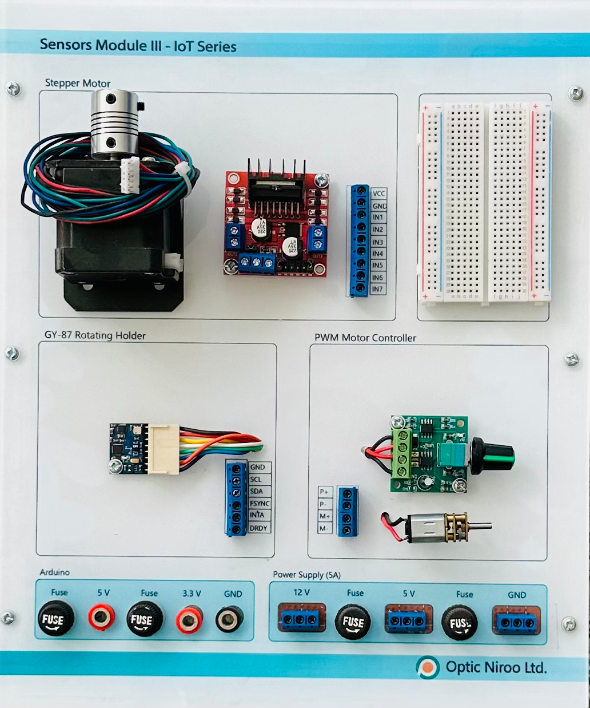

| نام تابلو: تابلو 05: حسگرهای سوم |
سال ساخت: 2025 |
| دستهبندی: تابلو |
نام شرکت سازنده: اپتیکنیرو - Optic Niroo |
| کشور سازنده: ایران |
تابلو 05 «حسگرهای سوم» دربردارنده موارد زیر است:
- الکتروموتور پلهای Stepper Motor + داریور پل H L298N
- مهارگر موتور PWM + الکتروموتور معمولی
- حسگر GY-87 (حسگر چندمنظوره موقعیت، شتاب حرکت، میدان مغناطیسی، فشار و دمای محیط)
- بِرِدبُرد کوچک